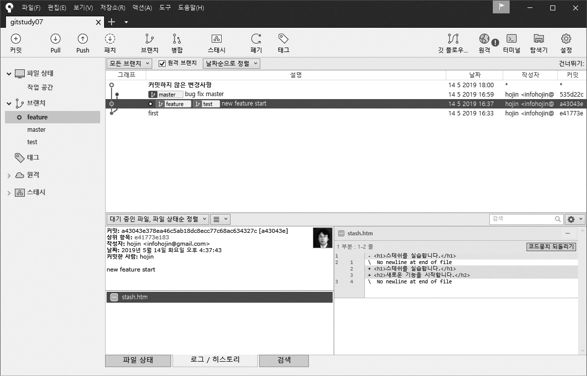

작업 브랜치를 변경하려면 워킹 디렉터리는 깨끗한(clean) 상태로 정리되어 있어야 합니다. 워킹 디렉터리에 작업 중인 내용이나 커밋되지 않은 변경 사항들이 남아 있으면 브랜치를 변경할 수 없습니다. 예를 들어 브랜치에서 코드를 수정하는 도중에 새로운 버그가 발견됩니다. 또는 고객의 긴급한 요청으로 코드를 추가해야 하는 경우가 발생합니다. 하지만 현재 작업 중인 코드 역시 수정이 끝난 것은 아닙니다.
이러한 상황은 실제 개발 작업 과정에서 자주 발생합니다. 일부 커밋하지 않은 작업 내용이 남아 있다면 브랜치 간에 이동할 수 없습니다. 그럼 어떻게 현재 수정 작업을 멈추고, 다른 브랜치에 있는 코드를 수정할 수 있을까요? 이러한 상황에서는 스태시(stash) 기능을 사용할 수 있습니다. 스태시는 간단히 말해 ‘안전한 보관’입니다.
그림 7-1] 스태시

깃은 완료되지 않은 작업(커밋되지 않은 변경 내용)이 남아 있을 때, 현재 작업을 임시로 저장할 수 있는 스태시 기능을 제공합니다. 스태시는 ‘현재 워킹 디렉터리 내역을 별도의 스택 영역에 잠시 보관하라’는 명령입니다. 스태시는 브랜치를 이동할 때 작업 중인 내용 때문에 워킹 디렉터리가 충돌하는 것을 방지하는 데 사용합니다.
스태시 명령을 실행하면 현재 작업 중인 내용은 임시 저장되고, 수정 전 마지막 커밋 상태로 돌아갑니다. 즉, 이전 커밋 후 작업하지 않은 상태의 워킹 디렉터리가 됩니다.
스태시를 하려면 stash 명령어를 실행합니다. 기본 명령어로 스태시를 실행하거나 옵션을 사용하여 추가 기능을 선택할 수 있습니다. -help 옵션을 같이 입력하면 다양한 명령어를 확인할 수 있습니다. 스태시는 로컬 저장소에서만 사용 가능합니다.
스태시 실습을 위해 새로운 저장소를 생성하겠습니다.
$ cd 실습폴더
$ mkdir gitstudy07 ☜ 새로운 실습 폴더를 생성합니다.
infoh@DESKTOP MINGW64 /e/gitstudy07
$ cd gitstudy07 ☜ 실습 폴더 이동
infoh@DESKTOP MINGW64 /e/gitstudy07
$ git init ☜ 저장소 초기화
Initialized empty Git repository in E:/ gitstudy07/.git/
실습을 위해 stash.htm 파일을 작성한 후 저장합니다.
infoh@DESKTOP MINGW64 /e/gitstudy07 (master)
$ code stash.htm ☜ VS Code 실행
stash.htm
<h1>스태시를 실습합니다.</h1>
생성한 파일을 등록 및 커밋합니다.
infoh@DESKTOP MINGW64 /e/gitstudy07 (master)
$ git add stash.htm
infoh@DESKTOP MINGW64 /e/gitstudy07 (master)
$ git commit -m "first"
[master (root-commit) e41773e] first
1 file changed, 1 insertion(+)
create mode 100644 stash.htm
새 파일을 생성하고 첫 커밋을 실행했습니다. 커밋하면 워킹 디렉터리는 다시 깨끗한 상태로 바뀝니다. status 명령어로 깃 상태를 확인합니다.
infoh@DESKTOP MINGW64 /e/gitstudy07 (master)
$ git status
On branch master
nothing to commit, working tree clean
개발자는 다양한 상황과 마주칩니다. 대표적으로 수정 작업을 하는 도중에 또 다른 수정 요청이 있는 경우입니다. 이때 현재 작업은 잠시 멈추고, 또 다른 요청을 반영하려면 새로운 브랜치가 필요합니다.
infoh@DESKTOP MINGW64 /e/gitstudy07 (master)
$ git checkout -b feature ☜ 브랜치 수정과 체크아웃을 동시에 처리
생성된 feature 브랜치에서 stash.htm 파일을 수정하고, 저장한 후 커밋합니다.
infoh@DESKTOP MINGW64 /e/gitstudy07 (feature)
$ code stash.htm ☜ 새로운 코드를 수정작성합니다.
stash.htm
<h1>스태시를 실습합니다.</h1>
<h2>새로운 기능을 시작합니다.</h2>
infoh@DESKTOP MINGW64 /e/gitstudy07 (feature)
$ git commit -am "new feature start"
[feature a43043e] new feature start
1 file changed, 2 insertions(+), 1 deletion(-)
수정 작업은 워킹 디렉터리에서 이루어집니다. 파일을 한 번 더 수정해 봅시다.
infoh@DESKTOP MINGW64 /e/gitstudy07 (feature)
$ code stash.htm
stash.htm
<h1>스태시를 실습합니다.</h1>
<h2>새로운 기능을 시작합니다.</h2>
새로운 기능이 너무 복잡하네요. 시간이 많이 걸릴 것 같습니다.
파일을 수정한 후에는 커밋하지 않고 저장만 합니다. 저장한 후에는 status 명령어를 입력하여 상태를 확인합니다.
infoh@DESKTOP MINGW64 /e/gitstudy07 (feature)
$ git status
On branch feature
Changes not staged for commit:
(use "git add <file>..." to update what will be committed)
(use "git checkout -- <file>..." to discard changes in working directory)
modified: stash.htm ☜ 수정 상태
no changes added to commit (use "git add" and/or "git commit -a")
status 상태 메시지에 코드가 수정되었다고 표시합니다. 아직은 원하는 모든 작업을 마무리하지 않은 상태입니다.
앞의 상황에 이어 또 다른 상황을 고려해 보겠습니다.
7.1.1절 실습에 이어 진행해 보겠습니다.
현재 브랜치는 작업 중인 코드로 불완전합니다. 새롭게 발견된 버그를 수정하려면 또 다른 원본 브랜치가 필요합니다. 원본 master 브랜치에서 새로운 브랜치를 생성해야 합니다. 따라서 master 브랜치로 체크아웃합니다.
infoh@DESKTOP MINGW64 /e/gitstudy07 (feature)
$ git checkout master
error: Your local changes to the following files would be overwritten by checkout:
stash.htm
Please commit your changes or stash them before you switch branches.
Aborting
앗, 원본 master 브랜치로 체크아웃되지 않습니다! 오류 메시지만 출력됩니다. 오류 메시지 내용은 워킹 디렉터리에 커밋하지 않은 작업이 남아 있어 현재 브랜치를 변경할 수 없다는 것입니다.
이러한 오류는 현재 수정하는 작업들이 체크아웃으로 다른 브랜치의 워킹 디렉터리에 영향을 줄 수 있기 때문입니다. 깃은 이러한 충돌을 미연에 방지하고자 작업 중인 내용이 있을 때는 브랜치 간 이동을 제한합니다.
브랜치를 변경하기 위한 체크아웃을 하려면 현재 작업 중인 워킹 디렉터리와 스테이지를 깔끔히 정리해야 합니다. 하지만 아직은 새로운 기능의 작업이 완료되지 않아 커밋할 수 없습니다. 이때 스태시를 활용하면 매우 유용합니다.
우리는 현재 작업 중인 브랜치의 워킹 디렉터리를 정리하지 못한 상태입니다. 따라서 현재 브랜치에서 버그를 수정하기 위한 다른 브랜치로 체크아웃할 수 없습니다.
다시 status 명령어를 실행하여 상태를 확인합시다.
infoh@DESKTOP MINGW64 /e/gitstudy07 (feature)
$ git status
On branch feature
Changes not staged for commit:
(use "git add <file>..." to update what will be committed)
(use "git checkout -- <file>..." to discard changes in working directory)
modified: stash.htm ☜ 수정 상태
no changes added to commit (use "git add" and/or "git commit -a")
브랜치를 이동할 수 없는 이유는 코드가 아직 수정 중인 상태이기 때문입니다. 이를 해결해야 다른 브랜치로 이동할 수 있습니다.
스태시 명령어는 수정 중인 내역을 커밋하지 않고도 브랜치를 이동할 수 있게 워킹 디렉터리를 깨끗이 청소합니다. 따라서 커밋 대신 스태시 명령을 실행하면 됩니다. 스태시는 영구적인 커밋 기록 대신 현재 작업들을 임시 스택 영역에 저장합니다. 간략하게는 git stash 명령어만 사용합니다.
$ git stash
또는 save 명령어를 추가하여 사용합니다. git stash save 명령어는 스태시 여러 개를 생성할 때 유용합니다.
$ git stash save
스태시는 스택 구조로 여러 번 실행하여 저장할 수 있습니다. 스태시가 여러 개 있을 때 각각의 스태시를 구별할 수 있도록 메시지도 추가할 수 있습니다.
$ git stash save "WIP: 메시지~~~"
브랜치에서 스태시 명령을 실행하면 작업 중인 내역들을 스택에 저장합니다.
infoh@DESKTOP MINGW64 /e/gitstudy07 (feature)
$ git stash
Saved working directory and index state WIP on feature: a43043e new feature start
다시 한 번 status 명령어를 실행하여 상태를 확인합니다.
infoh@DESKTOP MINGW64 /e/gitstudy07 (feature)
$ git status
On branch master
nothing to commit, working tree clean
워킹 디렉터리를 깨끗하게 정리했습니다. 그리고 워킹 디렉터리에서 작업 중인 임시 파일도 사라졌습니다.
이제 다시 master 브랜치로 체크아웃해 봅니다.
infoh@DESKTOP MINGW64 /e/gitstudy07 (feature)
$ git checkout master
Switched to branch 'master'
infoh@DESKTOP MINGW64 /e/gitstudy07 (master)
정상적으로 master 브랜치로 체크아웃되었습니다.
Note: 스태시 기능을 사용하지 않는다면 작업 중인 내용을 강제로 커밋한 후 다시 리셋해서 복원해야 합니다. 이 작업은 복잡하므로 가능하면 스태시 기능을 사용하길 추천합니다.
$ git commit -am “temp” ☜ 임시 커밋
$ // 다른 브랜치 작업들…
$ // 다시 현재의 브랜치로 돌아옴
$ git reset –soft HEAD^ ☜ 리셋 복원
스태시 작업을 할 때 스테이지 영역의 파일들을 제외할 수도 있습니다. –keep-index 옵션을 사용하면 스테이지 영역의 파일들을 제외하고 스태시를 만듭니다. 또 스태시는 등록된 파일들만 스태시로 생성합니다. 등록되지 않은 untracked 상태의 파일을 스태시로 생성하고 싶다면 –include-untracked 옵션을 같이 사용합니다.
스태시의 저장 영역은 스택 구조입니다. 스택은 FILO(First Input Last Out) 구조로, 마지막에 입력한 자료가 제일 먼저 출력되는 데이터 저장 방식입니다.
그림 7-2] 스택은 FILO 구조

스태시에 저장된 스택은 list 옵션을 사용하여 확인할 수 있습니다.
$ git stash list
깃은 스태시된 객체들을 .git/refs/stash에 저장합니다. 다음 예처럼 .git/refs/stash에 저장된 스태시 객체에서 cat 명령어로 내용을 확인할 수 있습니다.
$ cat .git/refs/stash
c5be53ff322fbc8f0d06b800a2b3637aa385cb62
master 브랜치에서 git stash list 명령어를 실행하여 목록을 확인합시다.
infoh@DESKTOP MINGW64 /e/gitstudy07 (master)
$ git stash list
stash@{0}: WIP on master: a43043e first commit
stash 명령어로 저장된 객체들의 목록이 출력됩니다. 스태시 이름은 stash@{번호} 형태로 순차적으로 부여됩니다. 목록 번호는 0부터 시작합니다.
스태시를 실행한 후 방금 전의 스태시와 현재 워킹 디렉터리 간 차이를 확인해 보겠습니다.
infoh@DESKTOP MINGW64 /e/gitstudy07 (master)
$ git stash show
stash.htm | 3 ++-
1 file changed, 2 insertions(+), 1 deletion(-)
현재 워킹 디렉터리 내용과 스태시된 내용 간 파일 변화를 간략하게 출력합니다. 삽입 2개와 수정 1개가 있습니다.
-p 옵션을 추가하면 상세 차이점도 알 수 있습니다.
infoh@DESKTOP MINGW64 /e/gitstudy07 (master)
$ git stash show -p stash@{0}
diff --git a/stash.htm b/stash.htm
index b5b0049..d9a15e5 100644
--- a/stash.htm
+++ b/stash.htm
@@ -1,2 +1,3 @@
<h1>스태시를 실습합니다.</h1>
-<h2>새로운 기능을 시작합니다.</h2>
\ No newline at end of file
+<h2>새로운 기능을 시작합니다.</h2>
+새로운 기능이 너무 복잡하네요. 시간이 많이 걸릴 듯 합니다.
\ No newline at end of file
스태시와 현재 워킹 디렉터리 간 상세한 차이점을 출력합니다. diff 기능과 유사합니다.
스태시를 사용하는 목적은 현재 워킹 디렉터리를 커밋하지 않고 임시로 저장하기 위해서입니다. 임시 저장된 내용은 다른 수정 작업을 완료한 후에 다시 불러와 사용할 수 있습니다. 앞에서 임시 저장한 스태시를 불러와 실습을 계속 진행하겠습니다. 먼저 master 브랜치의 파일 버그를 수정한 후 커밋하겠습니다.
infoh@DESKTOP MINGW64 /e/gitstudy07 (master)
$ code stash.htm
stash.htm
<h1>stash를 실습합니다.</h1>
한글 ‘스태시’를 영문 ‘stash’로 변경했습니다.
infoh@DESKTOP MINGW64 /e/gitstudy07 (master)
$ git commit -am "bug fix master"
[master 535d22c] bug fix master
1 file changed, 1 insertion(+), 1 deletion(-)
버그를 수정했습니다. 다시 원래 브랜치(feature)로 이동합니다.
infoh@DESKTOP MINGW64 /e/gitstudy07 (master)
$ git checkout feature
Switched to branch 'feature'
버그를 수정한 후 다시 원래의 작업 브랜치로 돌아왔습니다. 이전에 수정한 내역들이 남아 있지 않습니다. 스태시에 임시 저장한 작업 내용들을 읽어 다시 적용할 수 있습니다. 스태시 명령어 뒤에 pop 옵션을 추가합니다.
$ git stash pop
스태시는 저장 공간이 스택 구조라고 했습니다. 따라서 스택에서 저장된 작업 내용을 읽어 올 때는 제일 마지막에 저장된 내용을 읽어 옵니다. 이러한 데이터의 순차적 특징은 스택의 원리 때문입니다.
그럼 스태시에서 임시 저장된 작업 내용을 읽어 다시 적용합시다.
infoh@DESKTOP MINGW64 /e/gitstudy07 (feature)
$ git stash pop
On branch feature
Changes not staged for commit:
(use "git add <file>..." to update what will be committed)
(use "git checkout -- <file>..." to discard changes in working directory)
modified: stash.htm
no changes added to commit (use "git add" and/or "git commit -a")
Dropped refs/stash@{0} (2a9eb4f25e601230f9e5d9feeca72facdf96cd8c)
스태시의 스택에 저장된 작업 내용이 다시 적용되었습니다. 스태시는 스택에서 내용을 읽어 올 때 현재 브랜치의 워킹 디렉터리와 자동으로 병합합니다. 자동 병합이 성공하면 읽어 온 내용을 스택에서 제거합니다.
스태시에서 임시 저장된 작업 내용을 복원한 후 다시 스태시 목록을 확인합니다.
infoh@DESKTOP MINGW64 /e/gitstudy07 (feature)
$ git stash list
스태시 스택 목록에 내용이 없습니다. pop 옵션을 사용하면 스태시 저장 스택에서 항목을 가져오는 동시에 저장된 항목을 삭제하기 때문입니다.
Note: 스태시와 스테이지 영역 스태시는 스택에 저장할 때 워킹 디렉터리와 스테이지 영역의 파일까지 모두 보관합니다. 스태시로 복원할 때는 워킹 디렉터리만 되돌려 놓습니다. 스테이지에 등록된 스테이지 상태까지 복구하길 원한다면 –index 옵션을 사용해야 합니다.
$ git stash apply --index
스태시를 복원할 때 워킹 디렉터리의 상태는 깨끗해야 합니다. 스택에 저장된 스태시 내용이 다시 워킹 디렉터리로 복구될 때, 수정된 작업 내용과 현재 워킹 디렉터리를 병합하기 때문입니다. 복구되는 브랜치의 워킹 디렉터리가 깨끗하지 않다면 병합 과정에서 충돌이 발생할 가능성이 많습니다.
특히 스태시를 복원할 때 같은 파일에서 동일한 부분을 변경했다면 즉시 충돌이 발생합니다. 스태시를 복원할 때 충돌이 생기면 직접 문제를 해결해야 합니다. 복원하는 도중 충돌이 생기면 스태시는 스택에 저장된 내용을 자동으로 삭제하지 않습니다. 직접 충돌을 해결한 후 스태시 목록을 수동으로 삭제해야 합니다. 스태시 충돌이 예상된다면 스태시용 브랜치를 하나 생성해서 작업하는 것을 추천합니다.
다음은 새로운 브랜치를 생성한 후 스태시를 적용하는 명령입니다. 스태시 스택에 저장된 내용으로 새로운 브랜치를 동시에 생성할 수 있습니다.
$ git stash branch 브랜치이름
스태시로 이전 내용을 복원한 상태입니다. 아직 커밋을 수행하지 않았기 때문에 작업 중인 내용은 수정된 상태로 워킹 디렉터리에 남아 있습니다. 실습을 위해 현재의 임시 작업 내용을 다시 스태시해 보겠습니다.
infoh@DESKTOP MINGW64 /e/gitstudy07 (feature)
$ git stash
Saved working directory and index state WIP on feature: a43043e new feature start
현재 작업 내용을 다시 스태시하여 임시 저장했습니다. 스태시의 스택 목록을 확인합니다.
infoh@DESKTOP MINGW64 /e/gitstudy07 (feature)
$ git stash list
stash@{0}: WIP on feature: a43043e new feature start
스태시 내용이 하나 있는 것을 확인할 수 있습니다. 스태시 스택에 있는 내용을 새로운 test 브랜치를 생성해서 적용해 보겠습니다.
stash 명령어와 branch 명령어를 같이 사용합니다.
infoh@DESKTOP MINGW64 /e/gitstudy07 (feature)
$ git stash branch test
Switched to a new branch 'test'
On branch test
Changes not staged for commit:
(use "git add <file>..." to update what will be committed)
(use "git checkout -- <file>..." to discard changes in working directory)
modified: stash.htm
no changes added to commit (use "git add" and/or "git commit -a")
Dropped refs/stash@{0} (9eb2b13f462d76dd8ffa30f6695c042932bece79)
새로운 브랜치 생성과 동시에 스태시의 임시 작업 내용을 복원했습니다. 다시 스태시 명령을 실행해서 스택 목록을 확인해 봅시다.
infoh@DESKTOP MINGW64 /e/gitstudy07 (test)
$ git stash list
정상적으로 스태시 복원이 적용되면 저장된 스택은 자동으로 삭제합니다.
Note: 스태시는 로컬 저장소에서 브랜치 간 저장과 스태시를 복원할 때 충돌이 발생하는 상황 외에, 원격 저장소와 연결하여 작업할 때 충돌이 발생하는 상황에도 사용할 수 있습니다. 예를 들어 원격 저장소에서 풀(pull) 작업을 하면 로컬 저장소는 갱신됩니다. 이때 스태시를 복구하면 원격 저장소 내용과 스태시 작업 내용이 충돌할 수 있습니다.
스태시는 브랜치 작업들을 임시로 저장할 때 사용합니다. 또 임시 저장된 작업을 스태시 명령 이전의 브랜치 상태로 되돌려 놓습니다. 스태시를 사용한 저장과 복원은 서로 다른 브랜치에도 가능합니다. 반드시 이전에 실행한 브랜치와 같은 브랜치에서 할 필요는 없습니다.
앞에서 실습한 것처럼 다른 브랜치에서 스태시를 실행한 후 새로운 test 브랜치를 생성하여 스태시를 복원했습니다. 스태시 스택에 저장된 항목들은 어느 브랜치에서나 복원이 가능합니다. apply 옵션은 스택에 저장된 항목을 불러와 현재 브랜치로 복원합니다.
$ git stash apply
스태시 복원은 pop, apply 명령어 2개를 제공합니다. 두 명령어에는 차이가 있습니다. 스태시의 pop 명령어는 스택 내용을 복원한 후 스택 목록에서 자동으로 삭제합니다. 즉, pop 명령어는 스택 내용을 워킹 디렉터리로 이동하는 것과 같습니다. 하지만 스태시 복원을 하고 난 후 스택 목록을 삭제하고 싶지 않을 때도 있습니다. 이때 apply 옵션을 사용합니다. 스택 목록을 읽은 후 자동으로 삭제하지 않기 때문에 반복적으로 스택에서 스태시 내용을 읽어 올 수 있습니다. apply 명령어는 스태시 내용을 워킹 디렉터리로 복사하는 것과 같습니다.
apply 명령어를 실습하기 위해 현재의 임시 작업 내용을 다시 스태시로 저장합니다.
infoh@DESKTOP MINGW64 /e/gitstudy07 (test)
$ git stash
Saved working directory and index state WIP on test: a43043e new feature start
현재 출력되는 스태시 목록은 test 브랜치에서 작업 중인 내용입니다. feature 브랜치로 이동한 후에도 스태시에 저장된 내용을 확인할 수 있습니다. stash 명령어로 임시 작업 내용들을 스택에 저장하면 브랜치 간 이동이 가능합니다. 기존 checkout 명령어를 사용하여 feature 브랜치로 이동합니다.
infoh@DESKTOP MINGW64 /e/gitstudy07 (test)
$ git checkout feature
Switched to branch 'feature'
그리고 feature 브랜치에서 스태시 스택 목록을 확인합니다.
infoh@DESKTOP MINGW64 /e/gitstudy07 (feature)
$ git stash list
stash@{0}: WIP on test: a43043e new feature start ☜test에서 저장된 스태시
스태시의 저장 구조는 스택이며, 스택에 임시 작업 내용을 여러 개 저장할 수 있다고 했습니다. 그리고 작업 내용이 여러 개 저장되었을 때는 stash@{번호} 형태로 출력됩니다. 스택은 마지막에 저장된 작업을 가장 먼저 불러오는 구조입니다. apply 명령어는 pop 명령어와 달리 마지막 작업 내용이 아니라, 스택 목록의 중간 작업을 지정하여 적용할 수 있습니다. 이때는 다음과 같이 apply 명령어 뒤에 스태시 이름을 적어 주면 됩니다.
$ git stash apply stash@{1}
앞의 예처럼 특정 스태시를 선택해서 현재 브랜치의 워킹 디렉터리로 복원할 수 있습니다. 특정 스택의 번호를 명시하지 않는다면 스택 특징에 따라 가장 최신 스태시로 복원합니다.
스태시 번호를 이용해서 복원해 보겠습니다. 0번 스태시로 복원할 것입니다.
infoh@DESKTOP MINGW64 /e/gitstudy07 (feature)
$ git stash apply stash@{0} ☜0번 스태시로 복원
On branch feature
Changes not staged for commit:
(use "git add <file>..." to update what will be committed)
(use "git checkout -- <file>..." to discard changes in working directory)
modified: stash.htm
no changes added to commit (use "git add" and/or "git commit -a")
선택한 스택을 읽어 와 현재 브랜치의 워킹 디렉터리로 복원했습니다. 다시 스태시 목록을 확인해 봅시다.
infoh@DESKTOP MINGW64 /e/gitstudy07 (feature)
$ git stash list
stash@{0}: WIP on test: a43043e new feature start ☜스택 목록 남아 있음
스태시를 복원한 후에도 아직 스택 목록은 남아 있습니다. 이처럼 apply 명령어는 스택을 복원한 후에도 자동으로 삭제되지 않고 스택 목록에 남아 있습니다. 이러한 특징을 이용하여 여러 브랜치의 워킹 디렉터리로 스태시의 임시 작업 내용을 복사할 수 있습니다. 이는 스태시를 이용한 Ctrl+C와 Ctrl+V라고 생각하면 됩니다.
스태시는 복원할 때 한 번 호출하면 자동으로 스택에서 삭제됩니다. 하지만 충돌이 발생하거나 apply 명령어로 워킹 디렉터리를 복구할 때는 스택에서 자동으로 삭제되지 않습니다. 이때는 별도 명령을 실행해야만 스태시 목록에서 삭제됩니다.
$ git stash drop
이전 실습은 test 브랜치에서 저장한 임시 작업 내용을 apply 명령어를 사용하여 feature 브랜치로 복원했습니다. 그리고 스택 목록은 삭제되지 않고 남아 있습니다. 남아 있는 스택 목록을 삭제해 보겠습니다.
infoh@DESKTOP MINGW64 /e/gitstudy07 (feature)
$ git stash list
stash@{0}: WIP on test: a43043e new feature start
infoh@DESKTOP MINGW64 /e/gitstudy07 (feature)
$ git stash drop
Dropped refs/stash@{0} (6f494132548e24cf44660a60739df21f78be587b)
참고로 스태시를 너무 많이 만들어 사용하는 것은 바람직하지 않습니다. 사용한 스태시는 그때그때 삭제하여 정리하는 것이 좋습니다.
먼저 소스트리의 새 탭에서 Add 버튼을 클릭합니다. 탐색을 눌러 앞에서 만든 gitstudy07 폴더를 찾아 선택한 후 추가를 누릅니다. 그러면 gitstudy07 저장소와 연결됩니다.
소스트리에서는 코드 파일을 수정한 후 커밋하지 않은 내용이 있는 상태가 되면 자동으로 스태시7-a.jpg 버튼이 활성화됩니다. 다음과 같이 왼쪽에서 feature 브랜치를 선택하면 아래쪽에서 자세한 설명을 볼 수 있습니다. 스태시 버튼을 클릭합니다.
그림 7-3] 소스트리에서의 스태시 버튼

스태시 버튼을 클릭하면 스태시 메시지를 입력할 수 있는 창이 열립니다. 스태시 메시지는 한글로 작성하면 오류가 생길 수 있으므로 간략하게 영문이나 숫자로 작성합니다. 확인을 누르면 스태시가 저장됩니다.
그림 7-4] 스태시 메시지 입력

스태시를 저장하면 소스트리에서 왼쪽의 스태시 탭에 새로 추가한 스태시 목록이 활성화됩니다.
그림 7-5] 활성화된 스태시 목록

스태시 목록에서 마우스 오른쪽 버튼을 눌러 스태시 적용/삭제 여부를 선택해서 워킹 디렉터리를 복원할 수 있습니다. 메뉴만 살펴보세요.
그림 7-6] 스태시 적용/삭제 메뉴